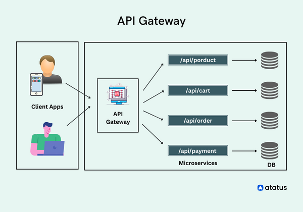
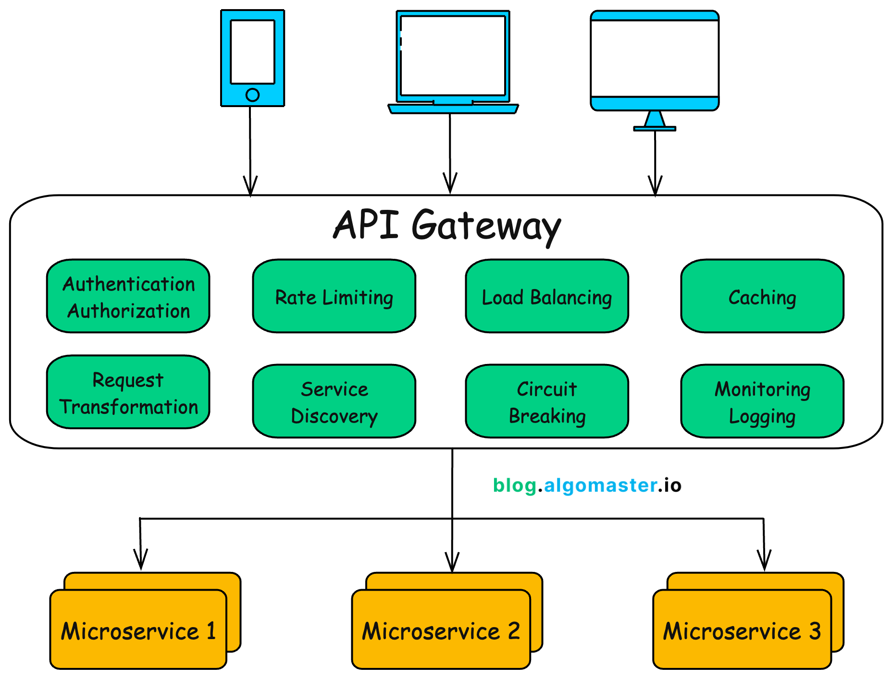
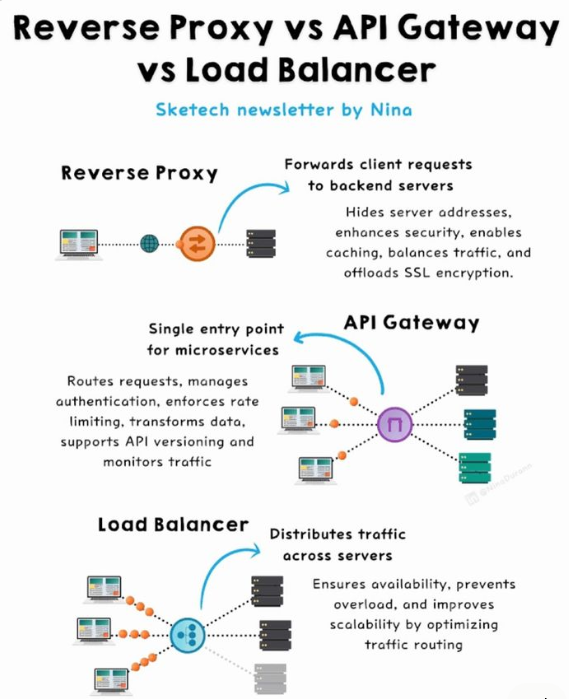

System Design Mastery
Master scalable systems with premium insights
🚪 API Gateway — Centralized Control for Distributed Systems
1️⃣ What is it?
An API Gateway is a single entry point for all client requests in a microservices architecture.
Instead of:
- Client → Service A
- Client → Service B
- Client → Service C
We use:
- Client → API Gateway → Multiple Services

📊 API Gateway as single entry point for microservices
🔄 Real-World Flow (How Companies Do It)
Client sends request to API Gateway
Gateway authenticates request
Routes to correct backend service
Combines response (if needed)
Sends back to client
2️⃣ Why Does It Exist? (What problem does it solve?)
In microservices:
- 🏗️ Many services exist
- 🔗 Each service has its own endpoint
- 🌐 Clients must know all service URLs ❌
- 🔒 Security & logging duplicated ❌
API Gateway does:
- 🎯 Centralized routing
- 🔐 Authentication & authorization
- 🚦 Rate limiting
- 📊 Logging & monitoring
- 🔄 Request aggregation
3️⃣ What Breaks Without It?
Without API Gateway:
- 🔴 Clients directly call microservices
- 🔗 Tight coupling between client & backend
- 📌 Example:
Mobile app must know 10 different service URLs ❌
4️⃣ Real-world Analogy
API Gateway = Reception Desk in Corporate Office 🏢
- 🚪 Visitors enter through reception
- 🗂️ Reception routes them to right department
- 📝 Reception checks ID & logs entry
- 🛡️ Clients don't directly access departments.
5️⃣ When to Use / When NOT to Use
✅ When to Use:
- 🏗️ Microservices architecture
- 📈 High-traffic systems
Examples:
- 🛒 E-commerce
- 🏦 Banking apps
- ☁️ SaaS platforms
❌ When NOT to Use:
- 📦 Monolithic application
- 📱 Very small system
- 🔧 Single backend service
📌 API Gateway is unnecessary overhead for simple systems.
Why Shouldn't Clients Call Microservices Directly?
1️⃣ Tight Coupling Between Client & Services
If clients call services directly:
📱 Mobile App → User Service
📦 Mobile App → Order Service
💳 Mobile App → Payment Service
📦 Mobile App → Inventory Service
🔥 Problems This Creates:
👉 This creates tight coupling.
2️⃣ Security Becomes Messy
If services are exposed directly:
Each service must handle authentication
Each service must handle authorization
Each service must implement rate limiting
Each service must validate tokens
👉 Centralizing security is safer.
3️⃣ Versioning Becomes Difficult
Without gateway:
📱 Client must handle different versions per service
With gateway:
🎯 Versioning managed centrally
🔄 Smooth migration possible
What Happens Inside an API Gateway?
1️⃣ What Should Client Ask API Gateway?
The client should NOT know internal services.
Client should only call:
https://api.company.com/<endpoint>
Examples: GET /users/123
Client never calls:
user-service.company.internal
order-service.company.internal
👉 Client talks only to gateway.
2️⃣ What Happens When Client Sends Request?
Example:
GET /orders/456
✅ Step 1: Authentication
- 🔑 Validate JWT token
- 🔑 Check API key
- 👤 Verify user identity If invalid → Reject request ❌
✅ Step 2: Authorization
- 🔐 Check if user can access this resource
Example:
- 👑 Admin → allowed
- 👤 Normal user → restricted
✅ Step 3: Rate Limiting
- 📊 Check request count
- 🚫 If exceeded → 429 Too Many Requests
✅ Step 4: Routing Logic (Very Important)
Gateway has a routing table like:
| URL Pattern | Service |
|---|---|
| /users/* | User Service |
| /orders/* | Order Service |
| /payments/* | Payment Service |
| /inventory/* | Inventory Service |
When request matches /orders/*
Gateway forwards request to:
order-service.internal:8080
This is called Path-based routing.
3️⃣ How Does Gateway Know Service Location?
🔹 Method 1: Service Discovery (Dynamic)
Gateway talks to:
- 🗂️ Service registry (like Eureka / Consul)
- ☁️ Kubernetes DNS
Flow:
Gateway → Service Registry → Find Order Service → Route request
Used in microservices.
🔹 Method 2: Load Balancing
If multiple order service instances exist:
Order Service:
- Instance 1
- Instance 2
- Instance 3
Gateway chooses one using:
- 🔄 Round robin
- 📊 Least connections
- 🎲 Random
🔄 Real-World Flow (What Else Happens Inside Gateway)
Besides routing, it can:
🔄 Aggregate responses
🔄 Transform request/response
🗜️ Compress data
📝 Add headers
📊 Log request
📈 Monitor metrics
⚡ Circuit breaking
🔄 Retry failed calls
5️⃣ Example: Dashboard API
Client calls:
GET /dashboard
Dashboard requires:
- 👤 User data
- 📦 Orders
- 🔔 Notifications
Gateway internally calls:
- 👤 User Service
- 📦 Order Service
- 🔔 Notification Service
Then combines all responses
Returns single response to client.
This is API Composition.

📊 API Gateway aggregating responses from multiple services
6️⃣ Real App Connection
🛒 E-commerce
Client → Gateway →
User Service
Product Service
Order Service
Payment Service
Gateway handles:
- 🔐 JWT authentication
- 🚦 Rate limiting
- 📊 Aggregated response
📷 Real Example (Instagram-like App)
When you open home feed:
Client calls:
GET /home
API Gateway:
- 👤 Calls User Service
- 📝 Calls Post Service
- 🎯 Calls Recommendation Service
Combines data
Returns single response to client.
Client doesn't know internal structure.

📊 API Gateway handling requests in real applications
🎯 Summary
An API Gateway is a centralized entry point in a microservices architecture that handles routing, authentication, rate limiting, and request aggregation.
Popular API Gateways are:
- 1. Kong
- 2. AWS API Gateway
- 3. Nginx
API Gateway simplifies client complexity while providing essential cross-cutting concerns like security, monitoring, and routing in a centralized layer.
💡 Pro Tip
Use API Gateway when you have multiple microservices that need centralized management of cross-cutting concerns like authentication, rate limiting, and request transformation.
For simple monolithic applications, a direct load balancer might be sufficient.